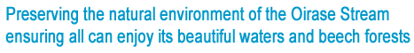

The Oirase Stream, located in the Towada-Hachimantai National Park, contains precious natural environments and beautiful scenery which must be left for future generations. Its preservation is of great importance. Meanwhile, as a tourist spot and location of breathtaking scenery representative of Aomori to the 2.8 million annual visitors to the prefecture, it is hoped the Oirase Stream can help further invigorate local tourism in the future.
For that purpose, with the aim of public and private sectors jointly promoting the conservation of the Oirase Stream's natural environment, the Oirase Stream Eco Tourism Project Planning Committee, formed of various industrial tourism, environmental and governmental organisations, has held the Oirase Stream Eco Tourism Project since 2008.
The Oirase Stream Eco Tourism Project aims to expand understanding and awareness of environmental conservation amongst Aomori residents and visiting tourists through initiatives such as private vehicle traffic restrictions held in the last week of October and other activities contributing to the preservation of the natural environment of the Oirase Stream. Our goal is the lasting conservation of, and by making the most of natural environments, the promotion of tourism and stimulation of local economies in the region.
Through the cooperation and collaboration of the public and private sectors, we would like to take this chance to increase the natural worth of, and publicize the intrinsic appeal of the Oirase Stream to a national audience.